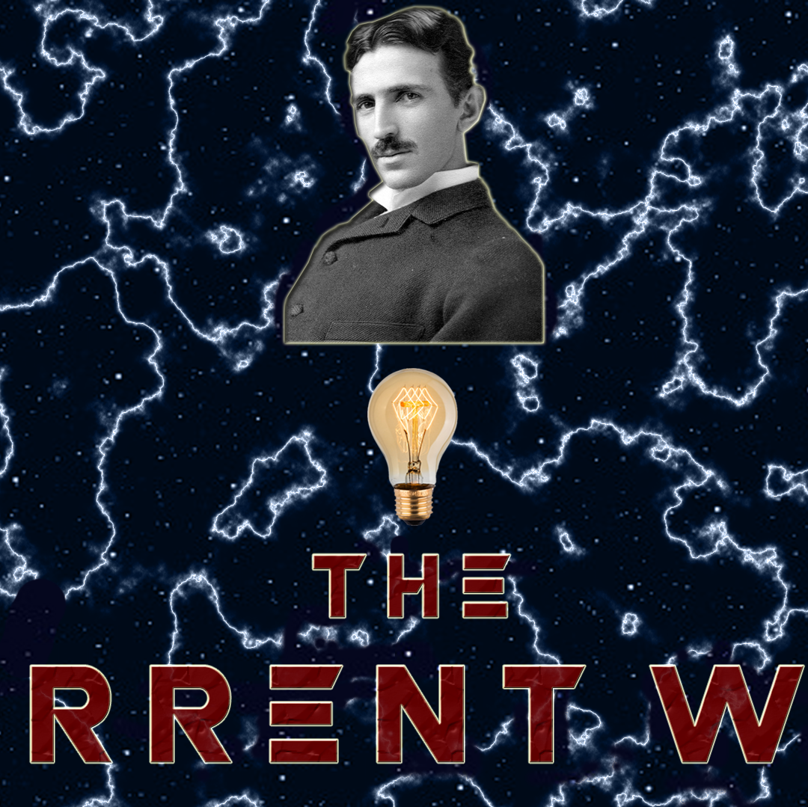

Война Токов. Часть ⚡⚡: Война

Тесла покинул компанию, затаив обиду на Эдисона он продолжил работу над своей дуговой лампочкой, но вскоре забросил этот проект и начал разработку генератора переменного тока. Работа над ним была завершена в 1887 году. Его генератор был дешевле всех предыдущих в производстве и поддержке.
Вопреки многим заблуждениям война токов не происходила напрямую между Эдисоном и Теслой. Переменный ток представлял Джордж Вестингауз и его Westinghouse Electric Company. Он начал разработку системы освещения на основе переменного тока еще в 1885 году и именно генератор Теслы позволил ему начать претворять ее в жизнь. Роль Теслы в этом конфликте закончилась после продажи патента.
Компания Вестингауза быстро начала отвоевывать рынок. К концу 1887 года уже было построено 68 электростанций на 121 станцию Эдисона. С учетом того, что у них отсутствовало ограничение в радиусе покрытия, разрыв между компаниями был не такой уж и большой.
Когда работники компании Эдисона предложили ему тоже перейти на переменный ток он резко отказался, заявив, что переменный ток слишком опасен. Его опасения основывались на том, что напряжение переменного тока достигало 6000 вольт. Не помогало и то, что переменный ток начали использовать для казни преступников.
Началом прямого конфликта между Вестингаузом и Эдисоном принято считать “Крестовый поход Брауна”. 5 июня 1888 года Гарольд Браун направил письмо с заявлением о том, что переменный ток сам по себе опаснее постоянного тока. Для доказательства этого он попросил помощи у Эдисона. Тот предоставил ему все необходимое оборудование. После экспериментов Браун провел публичные демонстрации на которых ударял собак током с возрастающим напряжением. Он показал, что собаки могут пережить до 1000 вольт постоянного тока, но умирают от 300 вольт переменного тока. Казалось бы все, опасность доказана, но не все так просто...
Article: Quasar
Preview: Quantum